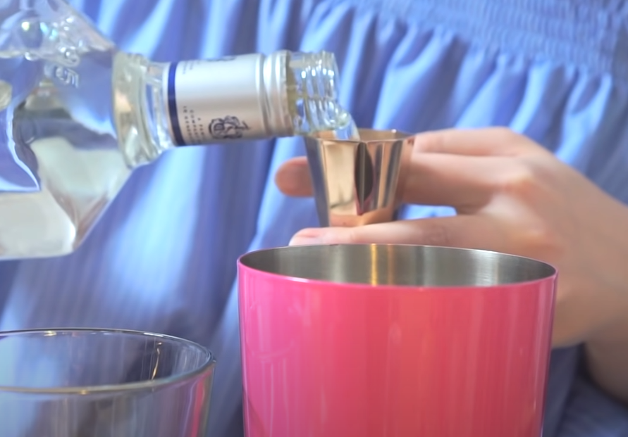
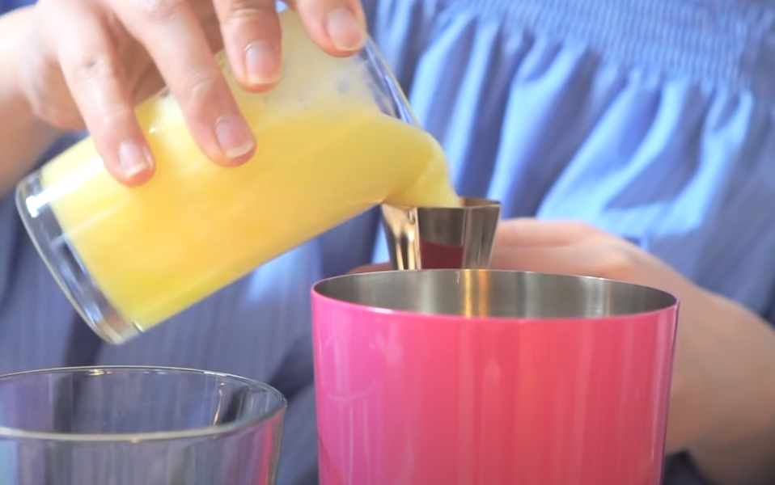
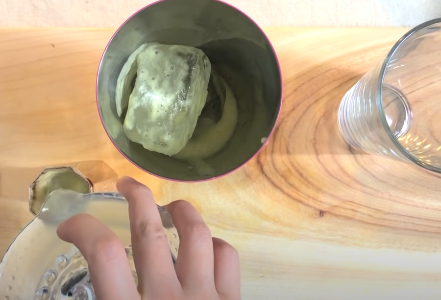
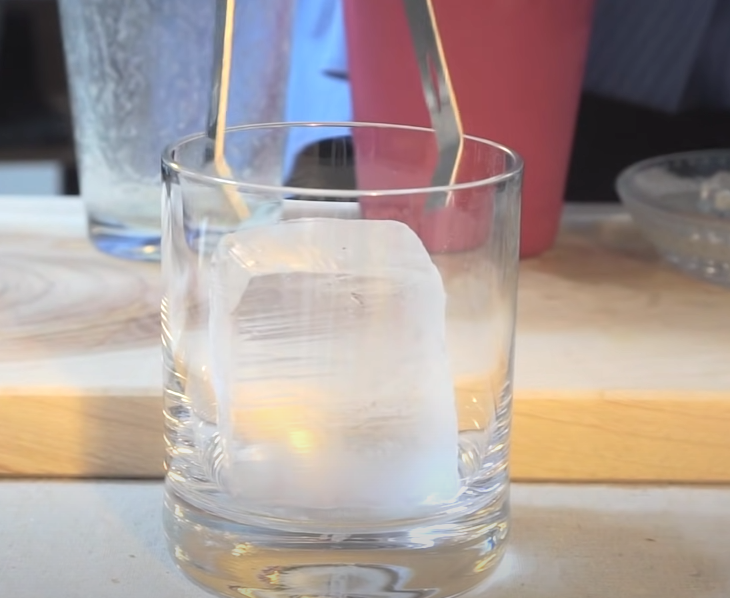
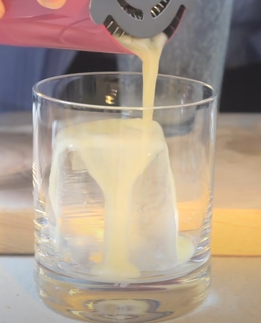
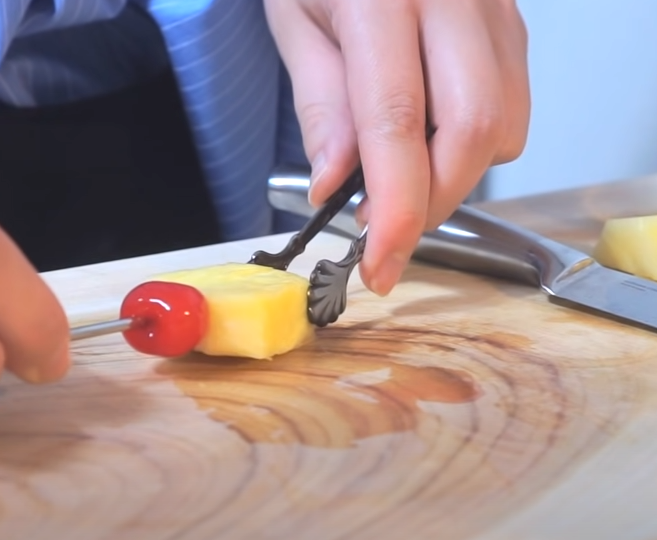
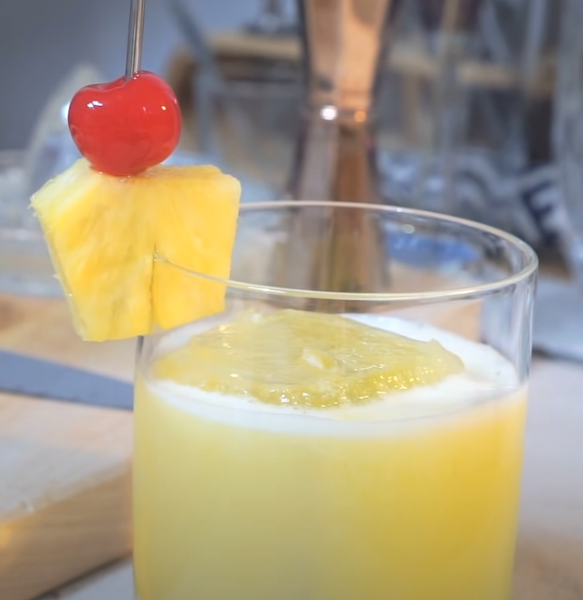
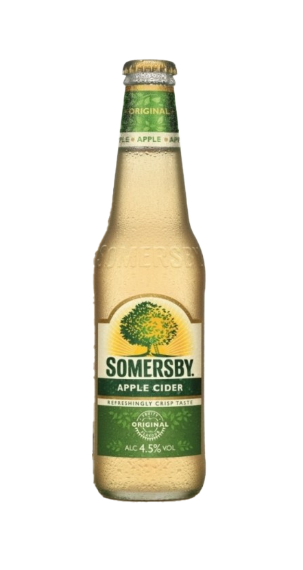

마가리타
| 글라스 | 기법 |
| 칵테일 글라스 | 리밍 / 쉐이킹 |
| 가니쉬 | |
| 소금 리밍 | |
| 재료 | |
|
데킬라 1 1/2oz 트리플섹 1/2oz 라임주스 1/2oz |
|
현재 가장 유력하게 받아들여지는 일화는, 금주법 시대에 술을 마시러 멕시코로 내려간 미국인들이 금주법 이전에 유행하던 브랜디 데이지에 구하기 힘든 브랜디 대신 멕시코의 전통주인 데킬라를 넣어 마셨다는 것이다. 애초에 마가리타라는 이름도 데이지의 스페인어이며, 다른 가설들보다 이른 시일인 1936년 Syracuse Herald에 실린 광고에는 ‘데킬라 데이지’라는 이름으로 마가리타가 소개되어 있다.

데킬라 썬라이즈
| 글라스 | 기법 |
| 푸티드 필스너 글라스 | 빌드 / 플로팅 |
| 가니쉬 | |
| 없음 | |
| 재료 | |
|
데킬라 1 1/2oz 오렌지 주스 Fill Up 그레나딘 시럽 1/2oz |
|
데킬라를 베이스로 하는 칵테일이며, 이름은 일출을 닮았다고 해서 붙여진 이름이다. 오렌지 주스와 그레나딘 시럽이 들어가 잘 넘어가는 편. 때문에 주의할 필요가 있다. 1930년대부터 만들어진 술이지만 영국의 전설적인 록밴드 롤링 스톤스가 그들의 전성기인 Exile on Main St. 1972투어에서 즐겨마시면서 유명해졌다고 한다. 심지어 1972투어를 데킬라 선라이즈 투어라고 불려지기도했다고 한다.
데킬라 사워
데킬라에 비해 들어가는 레몬 주스의 양이 적어 도수가 높으니, 마실 때 주의하자.

| 글라스 |
| 와인 글라스 |
| 기법 |
| 쉐이킹 |
| 가니쉬 |
| 체리 / 레몬 |

| 재료/레시피 |
|
1. 쉐이커에 데킬라 2oz를 넣는다. 2. 쉐이커에 레몬 주스 1/2oz를 넣는다. 3. 설탕 1tsp을 넣는다. 4. 모두 쉐이킹 한 후 와인 글라스에 따른다. 5. 체리와 레몬으로 가니쉬를 한다. |

마타도르
| 글라스 |
| 온더락 글라스 |
| 기법 |
| Shake |
| 가니쉬 |
| 파인애플 / 체리 |
| 재료 |
| 데킬라 1oz, 파인애플 주스 1 1/2oz, 라임 또는 레몬주스 1/2oz |
|  | 1. 데킬라 1oz를 쉐이커에 넣는다. |
| 2. 파인애플 주스 1 1/2oz를 쉐이커에 넣는다. |  |
|  | 3. 라임 또는 레몬 주스 1/2oz를 쉐이커에 넣는다.. |
| 4. 쉐이킹한다. |

|
|  | 5. 글라스에 얼음을 넣어 칠링한다. |
| 6. 쉐이킹한 칵테일을 잔에 넣는다. |  |
|  | 7. 파인애플과 체리를 칵테일 픽에 꽂는다. |
| 8. 잔에 가니쉬 해주면 완성! |  |
마타도르 이야기
스페인식 투우에서 소에게 최후의 일격을 가하는 역할을 맡은 투우사. 보통 화려하게 차려 입은 스타 투우사이자 가장 실력있는 사람일 경우가 많다. 일반적인 '투우사'의 이미지는 이 마타도르를 가리킨다. 카포테(capote : 위 사진의 붉은 천)와 검이 상징적인 요소. 마타도르는 '죽이는 사람'이라는 뜻으로 그 역할에서 이름을 따 온 것이다.

치마요
데킬라 베이스로, 멕시코에서 만들어진 칵테일이라고 한다. 기원은 1965년 아르투로 자라밀로(Arturo Jaramillo)라는 레스토랑 주인이 만들어냈다고 한다. 이때 레스토랑의 위치가 치마요 폭포 근처였고, 이름의 유래는 이 때문이라고 한다.2. 글라스에 데킬라 1 1/2oz를 넣는다.
3. 사과주 1oz를 넣는다.
4. 레몬주스 1/4oz를 넣는다.
5. 크렘 드 카시스 1/4oz를 넣는다.
6. 사과로 가니쉬 한다.
데킬라 / 1 1/2oz
사과주 / 1oz

레몬 주스 / 1/4oz

크렘 드 카시스 1/4oz